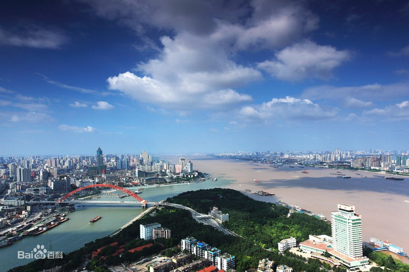
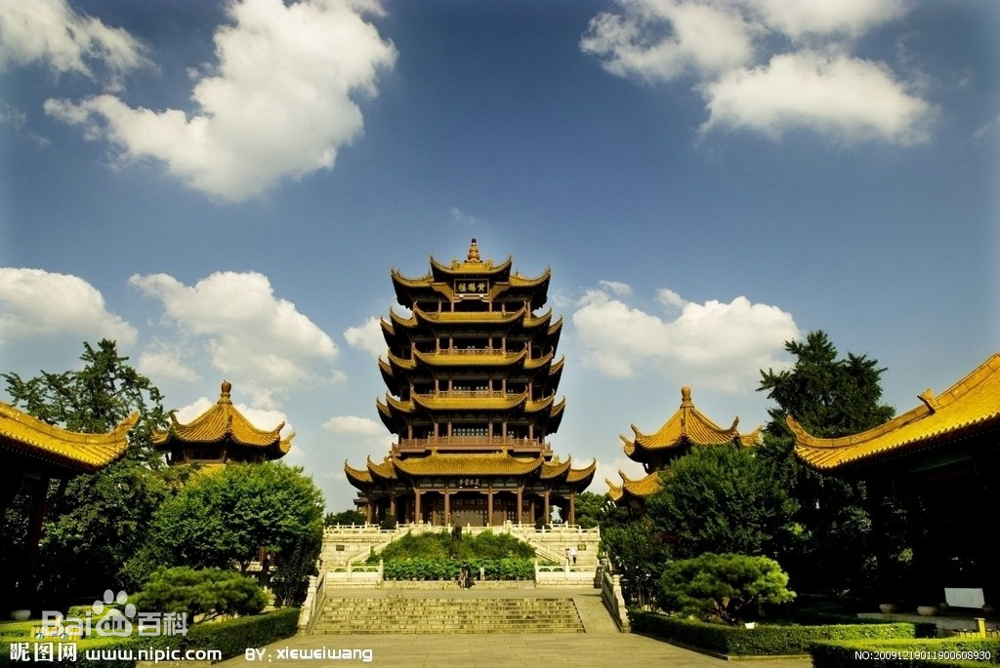

-

Wuhan is the capital of Hubei Province in China.
It is the largest city in Hubei and the most populous city in Central China,
with a population of over 11 million,
the ninth-most populous Chinese city and one of the nine National
Central Cities of China. The name "Wuhan" came from the city's historical
origin from the conglomeration of Wuchang,
Hankou and Hanyang, which are collectively known as the "Three Towns of Wuhan".
It lies in the eastern Jianghan Plain, at the confluence of the Yangtze river
and its largest tributary, the Han River and is known as "Nine Provinces' Thoroughfare".
The name "Wuhan" is a portmanteau of the two major cities on the northern and southern
banks of the Yangtze River that make up the Wuhan metropolis:
"Wu" refers to the city of Wuchang, which lies on the southern bank of the Yangtze,
while "Han" refers to the city of Hankou, which lies on the northern bank of the Yangtze.
-
.jpg) There are 35 higher educational institutions in Wuhan, making it "the city of university". Among
all these institutions, Wuhan University is the most popular one.
Wuhan University is a national research university located in Wuhan,
Hubei.It is one of the most prestigious and selective universities
in China, and was recognized by the Chinese Ministry of Education
as a Class A Double First Class University. It was one of the four elite
universities in the early Republican period and is also one of the oldest
universities in China. Wuhan University is located at Luojia Hill,
with palatial buildings blending Chinese and Western styles.
It is regarded by many as one of the most beautiful campuses in China
There are 35 higher educational institutions in Wuhan, making it "the city of university". Among
all these institutions, Wuhan University is the most popular one.
Wuhan University is a national research university located in Wuhan,
Hubei.It is one of the most prestigious and selective universities
in China, and was recognized by the Chinese Ministry of Education
as a Class A Double First Class University. It was one of the four elite
universities in the early Republican period and is also one of the oldest
universities in China. Wuhan University is located at Luojia Hill,
with palatial buildings blending Chinese and Western styles.
It is regarded by many as one of the most beautiful campuses in China
-

Wuhan is also famous for the Yellow Crane Tower. The current Tower is 51.4 m (169 ft) high and
covers an area of 3,219 m2 (34,650 sq ft). It is situated on Snake Hill,
one kilometer away from the original site, on the banks of the Yangtze River in Wuchang District.
However, the tower has been destroyed twelve times, both by warfare
and by fire, in the Ming and Qing dynasties and was repaired on
ten separate occasions. The last tower at the original site was
built in 1868 and destroyed in 1884. In 1907, a new tower was
built near the site of the Yellow Crane Tower.